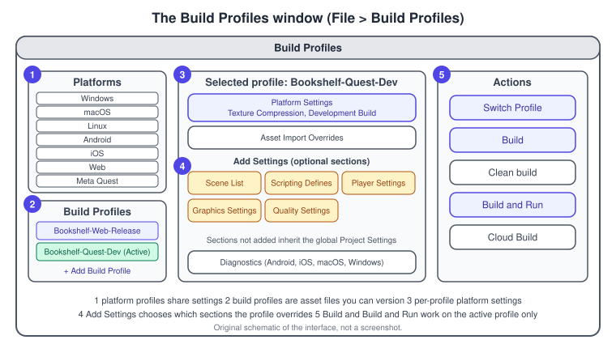
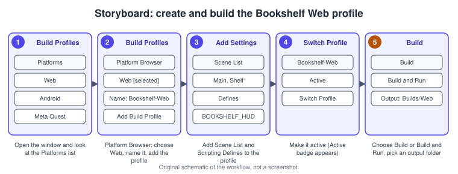
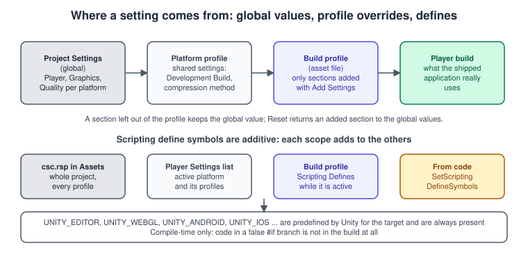
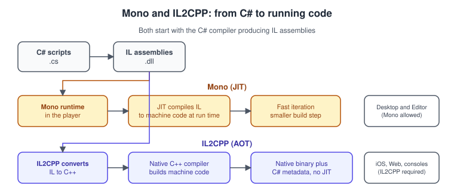

Build Profiles and Platforms
|
This content was generated with the assistance of AI and should be verified against the official documentation before being relied on in production. |
A Unity project is not a program: it is a set of scenes, assets, scripts and settings that the Editor compiles and packages into a player for one platform. Which scenes go in, which settings apply, which scripting back end compiles the C# and which symbols the compiler sees all depend on the target. Unity 6 collects those choices in one place, the Build Profiles window, and this page explains how that window, the settings behind it and the build pipeline fit together, using the Bookshelf as the example: a Web build for the browser, a Meta Quest build for the headset and a desktop build for development.
The facts were checked in November 2026. The page documents Unity 6.3 LTS (6000.3) and points out where Unity 6.5 and 6.6, the later Supported releases, differ. The Editor runs on Windows, macOS and Linux; building for a platform needs that platform’s module (installed through the Unity Hub), and some targets need extra tools: Xcode for iOS and visionOS, the Android SDK and JDK for Android, and the vendor kits for closed platforms.
Related pages: the editor workflow is in Getting Started: Hub and Editor, the Web target in detail is in Web and WebGPU, headsets and AR are in XR Development, and measuring a build on a device is in Profiling and Optimization.
From project to player
The diagram is the whole story in one line. Importing converts assets to the format the target wants (for example, a texture to ASTC on a phone or to DXT on a desktop). Compilation turns the C# into IL, using the scripting defines of the active target. The scripting back end then either ships the IL with a runtime that compiles it while the game runs (Mono) or converts it ahead of time to native code (IL2CPP). Finally the player is packaged in the form the platform expects: a Windows executable with its data folder, a macOS application bundle, an Android APK or AAB, an Xcode project for iOS, or a folder of files for a web server.
Each piece has an owner in the Editor. Import settings live on the assets, global defaults live in Project Settings, per-target choices live in the Build Profiles window, and the compile-time symbols can come from all of those places. The rest of the page follows that order.
The Build Profiles window
Open it with File > Build Profiles. In Unity 6 it replaces the Build Settings window of earlier versions.

The window has two lists on the left and the settings of the selected entry on the right:
-
Platforms lists the installed platform modules: Windows, macOS, Linux, Android, iOS, Web, Meta Quest and the others you installed. Each entry is a platform profile. Platform profiles share some settings across all platforms, for example Development Build: turn it on for one platform and it is on for all of them. They also share the scene data.
-
Build Profiles lists the profiles you created. Each is a build profile: its settings are not shared with other platforms or other profiles, it can have its own scene list, and Unity saves it as an asset file, so it can be committed to version control. There is no limit to how many a project can have.
Two buttons decide which entry is in force. Switch Profile (or Switch Platform for a platform profile) makes the entry active and shows an Active badge. Build and Build and Run work on the active entry only.
Create, copy and manage a build profile
To create a profile, use the window as follows:
-
Open File > Build Profiles.
-
Select Add Build Profile. The Platform Browser opens with the supported platforms: desktop, mobile, web and closed platforms.
-
Select the target platform. If the module is not installed, select Install with Unity Hub and follow the steps.
-
Type a unique Name, for example
Bookshelf-Web-Release. -
Tick the recommended packages you want in the Packages section; required packages are selected for you.
-
Select Add Build Profile, adjust the platform settings, then select Switch Profile to make it the active one.
You can also right-click a platform and choose Copy to new profile. Right-clicking a build profile lets you copy, rename or delete it.

Source: Create and manage build profiles
Add Settings: what a profile can override
A new build profile starts almost empty. The Add Settings button adds only the sections you want to customise; every other section keeps using the global values from Edit > Project Settings. The sections are:
| Section | What it does |
|---|---|
Scene List |
A scene list for this profile only. When added, it starts as a copy of the global list. Without it, the global list is used. |
Scripting Defines |
Extra scripting define symbols for this profile. They are additive and do not replace the other defines of the project. |
Player Settings |
Player settings for this profile, starting from the global values of the target platform. |
Graphics Settings |
Graphics settings (for example the render pipeline asset) for this profile, starting from Edit > Project Settings > Graphics. |
Quality Settings |
Quality levels for this profile, starting from the global quality levels of the platform. |
Adaptive Performance Settings |
Adaptive Performance settings for this profile. |
Packages you have installed can add more sections. The Diagnostics section is shown by default (without Add Settings) on Android, iOS, macOS and Windows and lets a profile override the Diagnostic Data setting from Project Settings > Services. Profile overrides are used in Play mode and in the player.
A section you added has a More menu with Reset, which puts the section’s values back to the global values for the platform, and Remove, which drops the section from the profile so it can be added again later.
The scene list
Unity packs the scenes of the list into the build, in list order; the first one is the scene the player starts in. For a platform profile the list is always visible. For a build profile it appears only after Add Settings > Scene List, and until then the project-wide list applies. In the list you can add the open scenes (Add Open Scenes) or drag scenes from the Project window, clear a scene’s checkbox to exclude it without removing it, remove it with a right click, and drag to reorder.
The Bookshelf uses this to ship different content: the Bookshelf-Web-Release profile lists Main and Shelf, while the Bookshelf-Quest-Dev profile adds a Debug scene with extra on-screen tools.
Source: Manage scenes in a build
Build, clean build and the other build buttons
-
Build produces the player without running it. It is incremental, except for the first build of a profile, which is always a full build.
-
Clean build discards the incremental state and builds everything again.
-
Build and Run builds, then installs and starts the player on the target (on iOS, Unity generates the Xcode project and Xcode installs it).
-
Force skip data build skips the content step when a previous successful build is still compatible with your scripts, which makes script-only iterations faster.
-
Cloud Build sends the build to Unity Build Automation, after you connect the project under Project Settings > Services.
Build and Build and Run appear only for the active profile. In Unity 6.6 every Player or content build also writes a build history report under Library/BuildHistory, which the new Build Analysis window reads so you can see what made the build large.
Source: Build options; What’s new in Unity 6.6
Where a setting comes from

When two places can set the same value, the more specific one wins: a section added to the build profile overrides the global Project Settings; a section that is not added falls back to them. The Reset command above is how you return to the global value. This is the main reason to use profiles instead of changing global settings before every build: the Web profile can use a smaller quality level and a Web-only template without touching the desktop settings.
Code can also read and change profile data. In Unity 6.3 the BuildProfile class has helpers to configure some of the optional sections and to manage ScriptableObject instances linked to a profile (a profile can hold one instance of each type). BuildProfile.GetActiveBuildProfile() returns the active profile, and returns null when a platform profile is active.
Scripting define symbols
A scripting define symbol is a name that is either defined or not when the C# compiler runs. Code between #if SYMBOL and #endif is compiled only if the symbol is defined, so it is absent from other builds entirely. Unity predefines symbols for the target (UNITY_EDITOR, UNITY_STANDALONE_WIN, UNITY_STANDALONE_OSX, UNITY_ANDROID, UNITY_IOS, UNITY_VISIONOS, UNITY_WEBGL and others) and you can add your own in four places:
-
A
csc.rspresponse file at the root ofAssets, with lines such as-define:BOOKSHELF_HUD;BOOKSHELF_CHEATS, for the whole project. -
The Scripting Define Symbols list in Player Settings > Other Settings > Script Compilation, for the active platform and its profiles. Select Apply to recompile.
-
A build profile’s Scripting Defines section, for as long as that profile is active.
-
Code, with
PlayerSettings.SetScriptingDefineSymbolsfor a build target or theBuildPlayerOptionsextra symbols for a single build.
Changes to a .rsp file apply only after the scripts recompile, for example after reimporting a script. The Web target still uses the symbol name UNITY_WEBGL even though the platform is now called Web.
// Assets/Scripts/Bookshelf/PlatformInfo.cs
using UnityEngine;
namespace Bookshelf
{
/// <summary>Logs which platform and graphics API the Bookshelf is running on.</summary>
public sealed class PlatformInfo : MonoBehaviour
{
void Start()
{
string target = "other";
#if UNITY_EDITOR
target = "Editor";
#elif UNITY_WEBGL
target = "Web";
#elif UNITY_ANDROID
target = "Android";
#elif UNITY_IOS
target = "iOS";
#elif UNITY_STANDALONE
target = "desktop";
#endif
Debug.Log($"Target: {target}, runtime platform: {Application.platform}, " +
$"mobile: {Application.isMobilePlatform}, " +
$"graphics API: {SystemInfo.graphicsDeviceType}");
#if BOOKSHELF_HUD
Debug.Log("The debug HUD is compiled into this build.");
#endif
}
}
}#if removes code at compile time, so use it for code that cannot even compile elsewhere, such as calls into an iOS-only API. For a choice you can make while the game runs, prefer Application.platform or SystemInfo, which keep one code path testable in the Editor. The C# language side of these directives is in Preprocessor Directives and Compilation.
Scripting back ends: Mono and IL2CPP

Mono is Unity’s fork of the Mono runtime. It compiles IL to machine code just in time, while the game runs. It gives fast iteration and quick builds, but lower runtime performance than IL2CPP, and it does not follow the newest .NET features. IL2CPP (Intermediate Language To C++) is an ahead-of-time (AOT) pipeline: it converts the IL to C++ and compiles that to native code with the platform’s own toolchain. It was created for platforms that forbid just-in-time compilation, such as iOS; it is required on several platforms (iOS, Web and consoles among them) and is supported on all of them. It generally improves performance and start-up time, at the cost of longer builds and a larger player.
Select the back end in Player Settings > Other Settings > Configuration > Scripting Backend, per platform, or from code. Three practical points follow from how IL2CPP works:
-
IL2CPP uses native tools of the target system, so cross-compilation is generally not supported: build a macOS IL2CPP player on macOS. Linux is the exception, with a cross-compiler.
-
Because the code is compiled ahead of time, runtime code generation (for example some uses of
System.Reflection.Emit) is not possible; the IL2CPP limitations page in the manual lists the restrictions that apply on ahead-of-time platforms. -
Debugging managed code works the same way on both back ends.
Managed code stripping and link.xml
To keep builds small, the linker removes code it can prove is unused. Managed Stripping Level (Player Settings > Other Settings > Optimization) sets how aggressive it is: Disabled (Mono only), Minimal (the default with IL2CPP: only UnityEngine and the .NET libraries are stripped, never your own code), Low, Medium and High. Higher levels shrink the build and lengthen the build time, and they can remove types that you reach only by reflection, such as types created from a JSON file or looked up by name. Two tools keep such code:
-
The
[Preserve]attribute (UnityEngine.Scripting.PreserveAttribute) on the class or member. -
A
link.xmlfile inAssetsthat lists assemblies, types or members to keep.
<!-- Assets/link.xml: keep the types the Bookshelf loads by name -->
<linker>
<assembly fullname="Assembly-CSharp">
<type fullname="Bookshelf.BookData" preserve="all"/>
<type fullname="Bookshelf.ShelfLayout" preserve="all"/>
</assembly>
</linker>using UnityEngine.Scripting;
namespace Bookshelf
{
// Created through reflection by the save-game loader, so the linker cannot see the use.
[Preserve]
public sealed class BookData
{
public string Title;
public int Pages;
}
}Setting the back end from an Editor script
Build machines usually set the back end and stripping level in code so that every build uses the same values. NamedBuildTarget identifies the target group:
// Assets/Editor/BookshelfPlayerSettings.cs
using UnityEditor;
using UnityEditor.Build;
namespace Bookshelf.EditorTools
{
public static class BookshelfPlayerSettings
{
[MenuItem("Bookshelf/Configure/Android Release Settings")]
public static void ConfigureAndroid()
{
var target = NamedBuildTarget.Android;
PlayerSettings.SetScriptingBackend(target, ScriptingImplementation.IL2CPP);
PlayerSettings.SetManagedStrippingLevel(target, ManagedStrippingLevel.Minimal);
PlayerSettings.Android.targetArchitectures = AndroidArchitecture.ARM64;
EditorUserBuildSettings.buildAppBundle = true; // AAB for Google Play
}
}
}Building from code and from the command line
The window’s Build button does not run your custom code. To add steps before or after a build, or to build without the Editor interface, use BuildPipeline.BuildPlayer. Since Unity 6 it has an overload that takes a BuildPlayerWithProfileOptions (a buildProfile, a locationPathName, options and an optional assetBundleManifestPath), so a script can build exactly what the window would.
// Assets/Editor/BookshelfBuild.cs
using System;
using UnityEditor;
using UnityEditor.Build.Profile;
using UnityEditor.Build.Reporting;
using UnityEngine;
namespace Bookshelf.EditorTools
{
public static class BookshelfBuild
{
const string ProfileFolder = "Assets/Settings/Build Profiles/";
[MenuItem("Bookshelf/Build/Web Release")]
public static void BuildWebRelease()
{
Build("Bookshelf-Web-Release", "Builds/Web", BuildOptions.None);
}
[MenuItem("Bookshelf/Build/Quest Development")]
public static void BuildQuestDevelopment()
{
Build("Bookshelf-Quest-Dev", "Builds/Quest/Bookshelf.apk", BuildOptions.Development);
}
/// <summary>
/// Entry point for continuous integration:
/// -executeMethod Bookshelf.EditorTools.BookshelfBuild.BuildFromCommandLine
/// -activeBuildProfile "Assets/Settings/Build Profiles/Bookshelf-Web-Release.asset"
/// -bookshelfOut Builds/Web
/// </summary>
public static void BuildFromCommandLine()
{
string profilePath = ReadArgument("-activeBuildProfile");
string output = ReadArgument("-bookshelfOut");
if (profilePath == null || output == null)
{
Debug.LogError("Pass -activeBuildProfile <asset path> and -bookshelfOut <path>.");
EditorApplication.Exit(2);
return;
}
var profile = AssetDatabase.LoadAssetAtPath<BuildProfile>(profilePath);
bool ok = profile != null && Build(profile, output, BuildOptions.None);
EditorApplication.Exit(ok ? 0 : 1);
}
static bool Build(string profileName, string output, BuildOptions options)
{
var profile = AssetDatabase.LoadAssetAtPath<BuildProfile>(ProfileFolder + profileName + ".asset");
if (profile == null)
{
Debug.LogError("Build profile not found: " + profileName);
return false;
}
return Build(profile, output, options);
}
static bool Build(BuildProfile profile, string output, BuildOptions options)
{
var settings = new BuildPlayerWithProfileOptions
{
buildProfile = profile,
locationPathName = output,
options = options,
};
BuildReport report = BuildPipeline.BuildPlayer(settings);
BuildSummary summary = report.summary;
if (summary.result == BuildResult.Succeeded)
{
Debug.Log($"Build succeeded: {summary.totalSize / (1024 * 1024)} MB in {summary.totalTime}");
return true;
}
Debug.LogError("Build failed: " + report.SummarizeErrors());
return false;
}
static string ReadArgument(string name)
{
string[] args = Environment.GetCommandLineArgs();
for (int i = 0; i < args.Length - 1; i++)
{
if (args[i] == name)
{
return args[i + 1];
}
}
return null;
}
}
}Run it from a terminal (or a CI job) in batch mode. Always give the target or the profile on the command line, because APIs that switch platform, such as BuildProfile.SetActiveBuildProfile, do not take effect while a script runs in batch mode: the Editor would have to reload its assemblies. For the same reason you cannot build several targets in one invocation; start Unity once per target.
# macOS, Unity 6.3 LTS; replace the editor path with the version you installed
/Applications/Unity/Hub/Editor/6000.3.XXf1/Unity.app/Contents/MacOS/Unity \
-batchmode -quit -projectPath "$PWD" \
-activeBuildProfile "Assets/Settings/Build Profiles/Bookshelf-Web-Release.asset" \
-executeMethod Bookshelf.EditorTools.BookshelfBuild.BuildFromCommandLine \
-bookshelfOut Builds/Web \
-logFile build.logWithout a custom script, -activeBuildProfile <asset> -build <path> builds a profile directly, and -buildTarget <name> -build <path> builds a platform. When -activeBuildProfile is given with -executeMethod, Unity compiles scripts with the profile’s scripting defines before the method runs. For the full list of arguments see the Editor command-line reference.
Checking a build before it starts
An IPreprocessBuildWithReport callback runs at the start of every build, from the window as well as from scripts, which makes it the right place for checks that must never be skipped. Throwing BuildFailedException stops the build with a clear message.
// Assets/Editor/BookshelfBuildChecks.cs
using System.Linq;
using UnityEditor;
using UnityEditor.Build;
using UnityEditor.Build.Reporting;
namespace Bookshelf.EditorTools
{
public sealed class BookshelfBuildChecks : IPreprocessBuildWithReport
{
public int callbackOrder => 0;
public void OnPreprocessBuild(BuildReport report)
{
bool anyScene = EditorBuildSettings.scenes.Any(s => s.enabled);
if (!anyScene)
{
throw new BuildFailedException("The build has no enabled scenes.");
}
if (report.summary.platform == BuildTarget.Android &&
string.IsNullOrEmpty(PlayerSettings.applicationIdentifier))
{
throw new BuildFailedException("Set the application identifier before building for Android.");
}
}
}
}The platforms
Desktop: Windows, macOS and Linux
Desktop is the least restrictive target. Windows produces an executable and a data folder, macOS an application bundle, and Linux a binary plus data. Mono and IL2CPP are both available; IL2CPP gives faster code and is harder to decompile, and the Bookshelf uses it for release builds and Mono for quick desktop iteration. Unity 6.6 deprecates Intel (x86_64) support for the macOS Editor and macOS players, so plan Apple silicon builds for new work. Desktop GPUs are where the texture format advice is simplest: DXT1 for RGB, BC7 (better quality, slower to compress) or DXT5 for RGBA, and BC6H for HDR textures on DirectX 11-class GPUs.
Android
Unity 6.3 supports Android 7.1 (API level 25) and later and can target API levels 35 and 36; from Unity 6.5 the minimum is Android 8.0 (API level 26), and by Unity 6.6 OpenGL ES 3.1 is the minimum OpenGL ES version. Vulkan and OpenGL ES are the graphics APIs. Android emulators are not supported: test on a device, with Unity Remote for input only, or with the Device Simulator for appearance only. Typical settings for a release:
-
IL2CPP and ARM64 (Google Play requires 64-bit code).
-
An Android App Bundle (AAB) for Google Play (Build App Bundle in the Android build settings, or
EditorUserBuildSettings.buildAppBundle), and an APK for testing. -
A keystore to sign the build. Publishing Settings > Keystore Manager creates, loads and extends a keystore. Keep the keystore and its passwords outside the repository; the Editor reads them from the Player Settings, and a CI job should inject them from a secret store.
-
Texture compression: ASTC is Unity’s default and the best choice on modern GPUs; ETC2 covers older OpenGL ES 3.0 devices, with Use Player Settings as the default in the build settings.
-
Export Project produces a Gradle project for Android Studio if you need to modify the native side.
iOS and visionOS
An iOS build has two steps: Unity generates an Xcode project, and Xcode builds, signs and installs it. Xcode runs only on macOS, so a Mac (or a cloud build service) is needed. Set the Bundle Identifier in the iOS Player Settings first, choose device or simulator with the SDK version field, then Build into a folder. If the folder already holds a project, Unity asks you to choose:
-
Replace removes everything in the folder and regenerates the project.
-
Append regenerates the Unity-owned files and updates the project file, keeping your changes to the Xcode project. Use it only with a project generated by the same Unity iOS version.
After the first build you can press Cmd+B to build and run in append mode. IL2CPP is the back end. Apple devices with the A8 chip (2014) or newer take ASTC for RGB and RGBA textures, with block sizes from 4x4 (8 bits per pixel) to 12x12 (0.89 bits per pixel); ETC2 is the fallback for older devices. The Apple privacy manifest and encryption export rules apply to the build and are documented in the iOS section of the manual. For the Apple-side concepts (signing, TestFlight) see Signing, Capabilities and Configuration; the visionOS target is in XR Development and visionOS.
Consoles and closed platforms
Console platforms (PlayStation, Xbox, Nintendo Switch) are closed platforms. Their modules, documentation and build tools come from the platform holder and are available only to registered developers who accept the platform’s licence; the Platform Browser lists them, and the manual says to check the licence requirements before installing. The Build Profiles workflow is the same as for any other target, and IL2CPP is the scripting back end. Plan for platform-specific input, save-data and certification work, none of which is covered on this site.
Web and XR
The Web platform produces a folder of files for a web server and is the subject of Web and WebGPU. Headsets use the Meta Quest and Android XR platforms in the same window (available as platform profiles and build profiles since Unity 6.1): the Meta Quest platform shares its Player settings with Android by default and installs the OpenXR plug-in when you select it. See XR Development.
Choosing a texture compression format
| Target | Recommended format | Notes |
|---|---|---|
Windows, macOS, Linux (DirectX 11-class GPUs) |
DXT1 (RGB), BC7 or DXT5 (RGBA), BC6H (HDR) |
DXT5 compresses faster than BC7 and is the choice for very old DirectX 10-class GPUs. |
iOS, tvOS, visionOS |
ASTC |
ETC2 for devices before the A8 chip; Unity unpacks formats a device lacks at run time. |
Android, Meta Quest |
ASTC, with ETC2 for older devices |
Texture compression targeting for Google Play can build several variants. |
Web |
DXT on desktop browsers, ASTC on mobile browsers |
Two builds may be needed; an unsupported format is decompressed in software, using more memory and time. |
The format can be set per platform in the Player Settings, in the build settings (which take precedence over the Player Settings, with Use Player Settings as the default), or per texture in the import settings. The Build Profiles window can also override import settings locally for speed: Max Texture Size and Force Uncompressed or Force No Crunch make imports and platform switches faster during development, and they must be reset for release.
Common mistakes
-
Changing global settings before every build. Put the differences in build profiles; a forgotten global change is the usual reason a release build behaves like a debug one.
-
Forgetting that an unadded section is inherited. If a profile has no Scene List section, it builds the global list, not an empty one.
-
Using
#if UNITY_EDITORcode in runtime scripts without closing the block, which breaks the player build while the Editor works. Put editor-only code in anEditorfolder or an editor-only assembly definition. -
Reflection under stripping. A type that works in the Editor can vanish from an IL2CPP build with Medium or High stripping; add
[Preserve]orlink.xmlentries and test a real build. -
Building IL2CPP on the wrong operating system. iOS needs macOS and Xcode; a Windows CI agent cannot build it.
-
Shipping a development build. Development Build is shared across platform profiles, so a switch made for one platform leaks into others. Check it in the build log and in the build report.
-
Committing keystores or passwords. Keep signing material in a secret store, and never put it in a build profile asset that goes to version control.
-
Switching platform in a batch-mode script. It does not take effect; start Unity with
-activeBuildProfileor-buildTarget.
Performance notes
-
IL2CPP builds take longer and are larger than Mono builds, but the native code is faster and starts faster; measure the Bookshelf on the device, not in the Editor.
-
Incremental builds are the default; use Clean build only when something looks stale, and keep the
Libraryfolder on a CI cache to avoid reimporting everything. -
Override import settings (Max Texture Size, Force No Crunch) for the development profile to cut import time, and remove the overrides for release builds.
-
Strip aggressively only after tests prove nothing is lost; the size win of High over Minimal is real but so is the risk.
-
After a build, read the build report (
BuildReport) or, from Unity 6.6, the Build Analysis window to find the assets that dominate the size, and see Profiling and Optimization for runtime measurements.
What changed recently
| Version | Change |
|---|---|
Unity 6.0 (October 2024) |
Build Profiles replace the Build Settings window; the WebGL platform is renamed Web. |
Unity 6.1 |
The Meta Quest build platform and build profile are available in the Build Profiles window. |
Unity 6.3 LTS (December 2025) |
The Build Profiles window lets you add only the settings you want to customise; |
Unity 6.5 |
Android minimum becomes API level 26 (Android 8.0). The Built-In Render Pipeline is deprecated. |
Unity 6.6 (September 2026) |
Build Analysis window and build history reports; Intel macOS support deprecated; OpenGL ES 3.1 is the minimum OpenGL ES version on Android. |
Where the books are outdated
UIA is Unity in Action (3rd edition) and GDP is Game Development Patterns with Unity 2021 (2nd edition).
-
UIA chapters 12 and 13 use File > Build Settings to switch platform and build. In Unity 6 the window is File > Build Profiles, with platform profiles and build profiles; the old workflow of one global scene list maps to the platform profile’s scene list.
-
UIA chapter 13 calls the browser target "WebGL". The platform is called Web in Unity 6, with WebGPU production-ready in 6.6 and WebAssembly 2023 enabled by default for new projects from 6.5 (see Web and WebGPU).
-
UIA chapter 13 describes the Oculus and Windows XR plug-ins and the AR Session Origin. In Unity 6 headsets use OpenXR with a Meta Quest or Android XR profile, and the object is called XR Origin (see XR Development).
-
UIA chapter 13 lists Android minimums of its time. Unity 6.3 supports API level 25 and later, and Unity 6.5 raised the minimum to API level 26 with OpenGL ES 3.1 as the lowest OpenGL ES version by 6.6.
-
UIA chapter 9 and GDP chapter 4 (static singletons and managers) assume a domain reload on every Play mode start. Unity 6.6 changed the default for new projects to reload the scene only, so static state must be reset explicitly.
See also
-
Web and WebGPU: the Web platform, WebGPU and browser interop.
-
XR Development: Meta Quest, Android XR and AR builds.
-
Profiling and Optimization: measuring a build on the device.
-
Render Pipelines Overview: the render pipeline asset a build profile can override.
-
Getting Started: Hub and Editor: modules, templates and the Editor windows.
-
Performance and Profiling: the general concepts behind build and runtime measurement.
-
Vulkan on Android: the graphics API Unity uses on Android devices.
-
Graphics, Canvas and OpenGL ES: Android graphics fundamentals.
-
Preprocessor Directives and Compilation: the C# directives behind scripting defines.